Safari
Safari 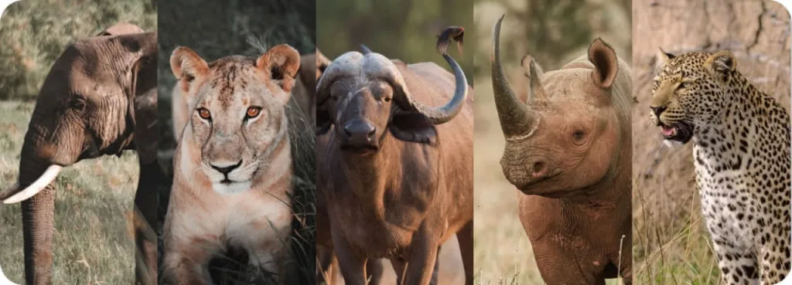
In this article, you will learn:
- What are the Big Five Animals of Africa
- What unites them and why they are called the Big Five
- Where can you see them in Tanzania
- Whether it's possible to find all the animals of the Big Five in one place
- What other groups of five animals exist
What are the Big Five animals of Africa?
Many safari-goers plan to "collect" the Big Five animals when they visit Africa, which means seeing at least one representative of each of the following species:
- Elephant
- Lion
- Buffalo
- Rhino
- Leopard
Why are they called the Big 5 animals? The concept of the Big Five of Africa emerged in the second half of the 19th century when affluent men from the West found it fashionable to travel to the unexplored continent for hunting exotic animals. These were not necessarily the largest animals in Africa, but they were the most dangerous and the most challenging to acquire as trophies. Hunting them required courage and endurance, and often resulted in injuries or even fatalities. Those who managed to showcase all five trophies in social clubs were seen as brave heroes and true adventurers.
Fortunately for the animals and for us, times have changed, along with our perceptions of ethical treatment towards nature. If we look at the list of animals killed by Theodore Roosevelt and his son Kermit during their famous safari in 1910-1911, we would find 11 elephants, 17 lions, 10 buffalos, 20 rhinos, and 3 leopards, along with several hundred other animals. Today, these numbers are shocking, especially considering that four of the Big Five are now in a vulnerable status due to population decline.
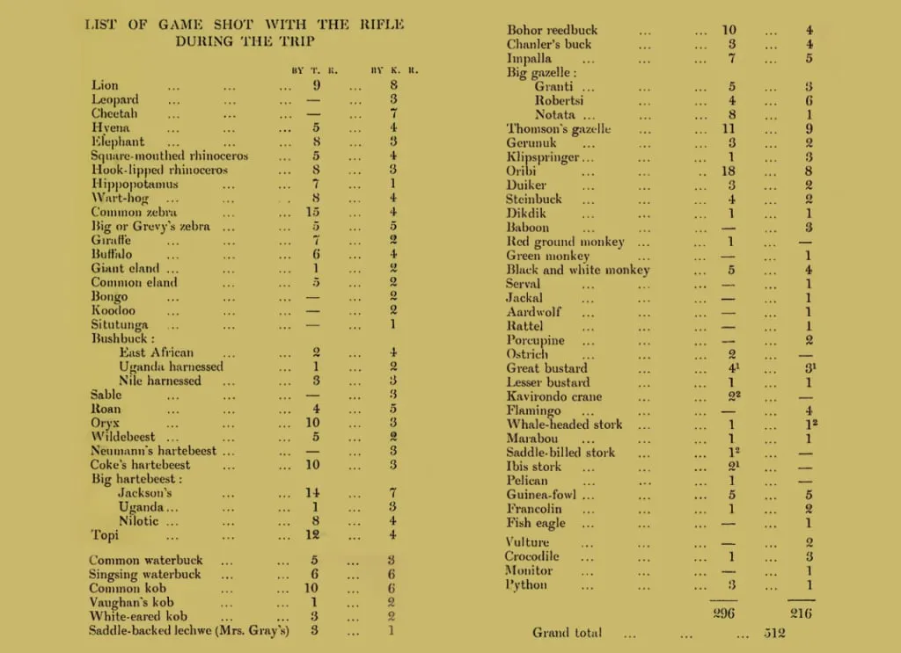
Safari has transformed from hunting to an educational journey, and desired trophies have changed too; modern adventurers seek great photographs, memories, and the unique opportunity to observe the protagonists of amazing National Geographic documentaries up close. Travelers now have something akin to checklists of African animals, where they tick off boxes when they see rhinos and leopards in national parks, and then share vibrant impressions of Africa's wildlife.
The complete history of safari, with fascinating old photographs, is described in our article "What is Safari?". You can choose a safari tour that suits you best among the programs offered by Angelino Adventures. Feel free to reach out to our managers in the chat to learn all about safari options in Tanzania. And now, let's get acquainted with the representatives of the Big Five.
Which animals are part of the Big Five?
Let's briefly talk about each member of the Big Five, providing the species' names since not everyone knows that Africa is home to, for example, two types of elephants and two types of rhinos. We will also explain the dangerous qualities of those animals that led hunters to include them in a special list, and suggest where to go on safari to ensure a sighting of these marvelous creatures of African fauna.
African savanna elephant
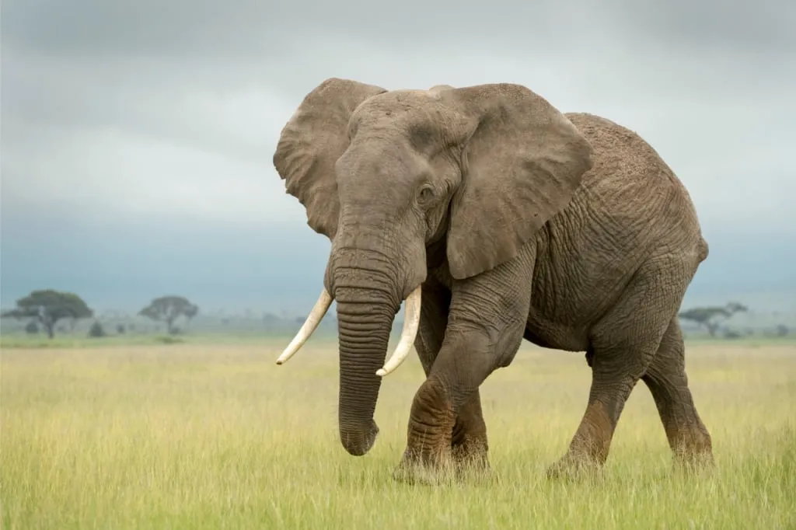
Appearance and habitat of elephants in the wild
Elephants are the largest land animals, as confirmed by the Guinness World Records. They can reach a height of 4 meters (13 feet), and the largest verified weight of an elephant is 6,600 kilograms (14,550 pounds), although there are reports of encounters with even more massive individuals. If you stack a couple of large and heavy Toyota Land Cruisers, which are used for safaris in Tanzania, one on top of the other, you'll get an approximate weight of an adult elephant.
On average, a human consumes about 2-3 kilograms (4.4-6.6 pounds) of food daily, and we could never come close to the portion sizes of elephants. These animals can devour 130 kilograms (286 pounds) of food in a single day, which means they can completely decimate an entire small farm! This is why farmers near places like Ngorongoro have to use electric fences that force elephants to seek food in the forest and savannah.
Elephants share many similarities with humans: they are social, intelligent, and have a significant impact on the environment. They can live up to 70 years, just like humans. Elephants organize themselves into herds, cooperating in raising and protecting their young. In terms of intelligence, these African giants are comparable to great apes and dolphins. Researchers have observed the remarkable behavior of elephants visiting the bones of deceased family members, standing nearby, and touching the remains with their trunks. It is also known that they can show empathy not only toward their own kind but also toward representatives of other species.
Elephants, more than any other wild animals, have the ability to alter the landscape. They create pathways through thickets, uproot trees with their roots, thinning out forests and savannahs, and dig large watering holes in the dried-up riverbeds with their massive tusks. Other animals later benefit from these watering holes and forest trails. The destruction caused by elephants helps create open spaces for zebras, antelopes, and other plains animals. Because of this ability, elephants are called ecosystem engineers. A great example is Rubondo Island in Tanzania, where elephants were initially introduced when creating the national park. After those giants created open spaces within the forest, smaller animals were introduced.
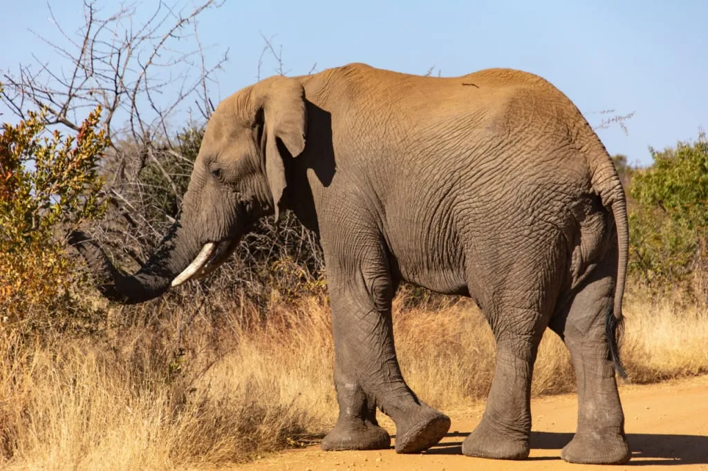
Which elephant species are included in the Big Five?
When we talk about the Big Five, we specifically refer to the African savannah elephant (aka African bush elephant), scientifically known as Loxodonta africana. Many people believe that there are only two species of elephants: Asian and African. However, DNA research has shown that there are actually three species, as both African forest elephants and African savanna elephants inhabit Africa. There are significant differences not only at the genetic level but also in their physical structure. Visually, forest elephants are smaller, so it is evident that hunters were primarily interested in the large savanna elephants, which is why they made it onto the list.
Why elephants are dangerous to hunters?
Elephants have few natural predators, which allows them to dominate their habitats and freely roam over large distances in search of food and water. Their dominant position has influenced their behavior when encountering hunters. These formidable giants fearlessly drive away people who trespass on their territory and pursue hunters, protecting their young. An enraged elephant can quickly catch up to a person on foot and trample them to death.
In popular national parks and reserves, elephants have become accustomed to passing vehicles and people observing them from within the cars. However, encountering elephants on foot outside protected areas can still be very dangerous for humans.
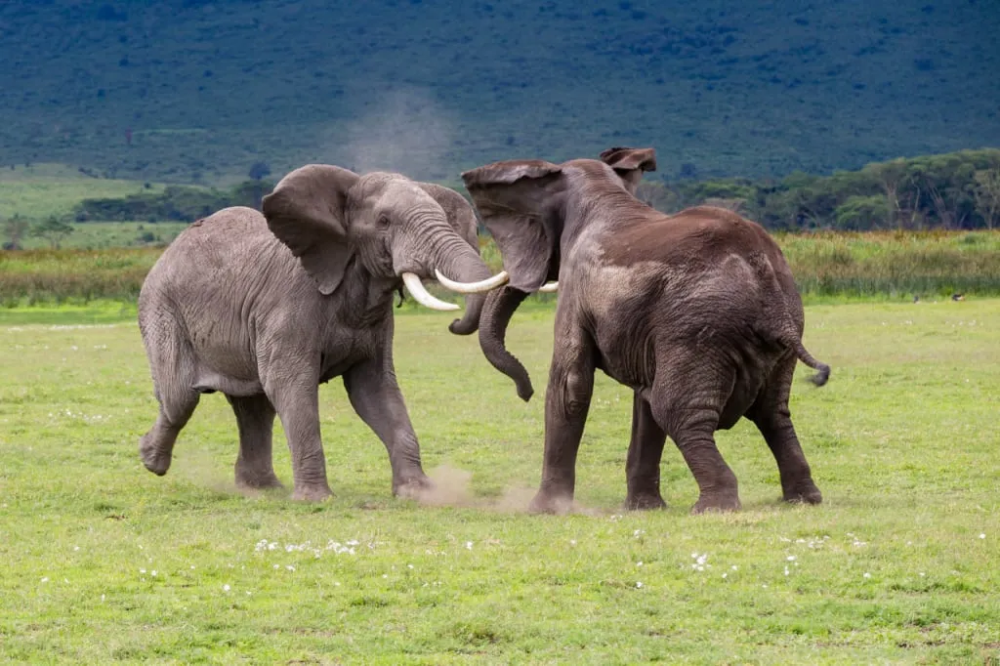
How many elephants are still left?
These large animals require a lot of space, but their habitats are being encroached upon by humans, resulting in elephants gradually losing their range. Additionally, humans hunt and kill these animals for ivory. It may seem barbaric, but poaching for elephant ivory still thrives today due to its high value. If Africa had around 26 million elephants before European colonization, the number decreased to about 5 million African elephants in the last century, and now there are only about 415,000 elephants of both species roaming Africa, with approximately 350,000 being savanna elephants.
The African savanna elephant is listed as a Critically Endangered species in the International Red List. For example, in the 1980s, they were being killed at a rate of 100,000 per year. If this pace of extermination were to resume today, Africa would be left without a single elephant within five years. Fortunately, the governments of several countries have established national parks and banned elephant hunting
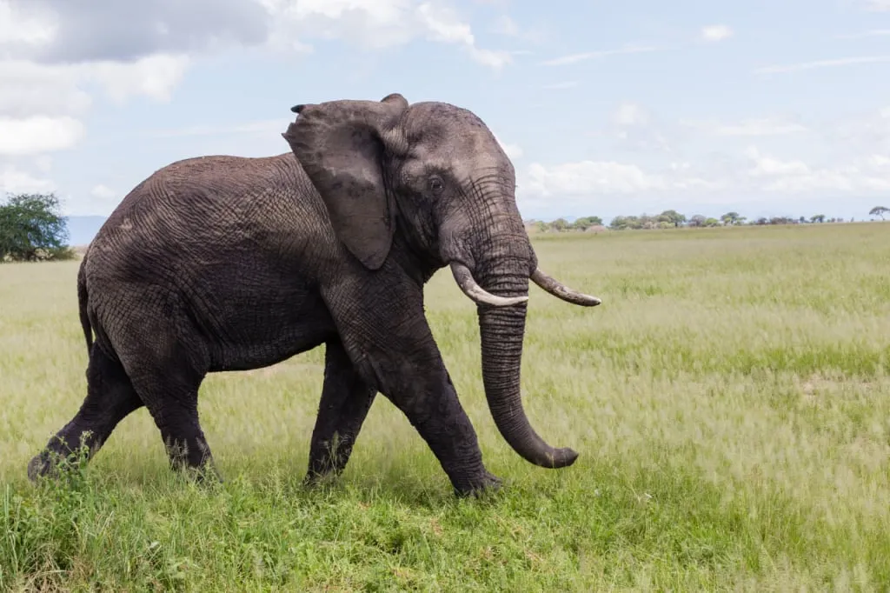
Where to find elephants in Tanzania?
Today, you can see these magnificent animals in national parks and reserves such as Tarangire, Serengeti, Ngorongoro, Ruaha, and Nyerere.
Lion
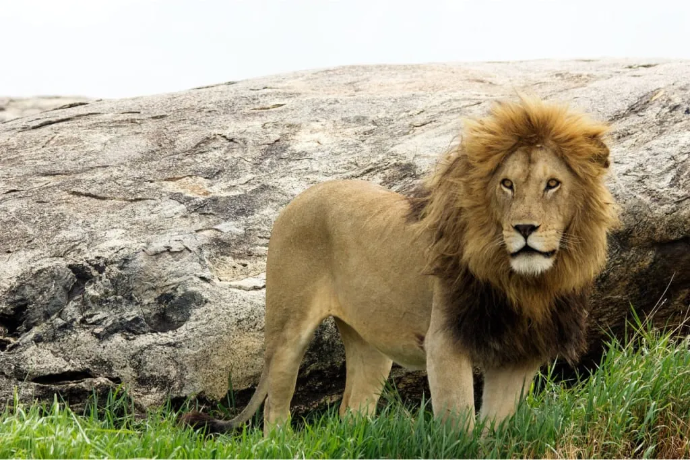
A few interesting facts about lions
Lions need nto introduction; they are among the most striking and attention-grabbing animals in Africa. In the most famous movie about African wildlife, "The Lion King," this representative of the Big Five was the central character, and his name, Simba, means "lion" in Swahili, the most widely spoken language in Tanzania. How accurate is the storyline of the Disney cartoon?
Lions do indeed live in prides, making them the only social representatives among large cats. There are a total of 38 species of cats, and 8 of them are considered large: tiger, lion, jaguar, leopard, snow leopard, cheetah, clouded leopard, and Eurasian lynx. Remember how young Simba learned to roar menacingly? Roaring is precisely the characteristic that unites most large cats. Measurements show that the lion's roar can be heard across the savannah for up to 5 kilometers (3.1 miles).
But there is one glaring inaccuracy in the film — in the movie's storyline, we saw that lions are ruled by a king, a dominant male. However, in reality, lion communities, like elephant herds, are quite matriarchal, and it is the lioness that governs the pride. Males constantly change prides throughout their lives, capturing and holding them for 2-3 years or slightly longer if there are many lions and they act cooperatively. The males' role is to protect their territory and pride with the growing offspring, expand their sphere of influence by encroaching on the territories of others, and kill the cubs of rival males. That's why in real life, Mufasa and Scar would be together, fighting side by side, rather than being enemies.
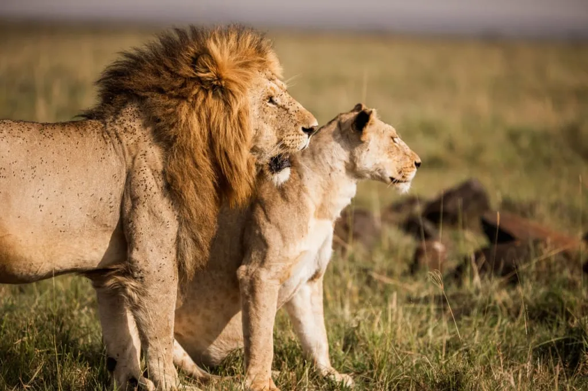
Is it true that only lionesses hunt prey? In most cases, yes. This can be explained by the fact that lionesses are smaller and lighter, making it easier for them to hunt herbivores. They are also more social than males, forming large groups that surround their prey and slowly approach it in tall grass. However, males are also capable of hunting, especially when they are outside the pride. Being larger, they can afford to hunt buffalo and giraffes, while females more often choose wildebeests and zebras. There have been instances of lions attacking elephant calves. In general, as apex predators, lions are at the top of the food chain and can prey on all other members of the Big Five.
Hunting often takes place during the dark hours, and successful attacks on large prey like elephants are more often recorded on moonless nights. During the day, lions rest, conserving their energy for the next hunt. It is quite energy-demanding activity, which is why lions need to sleep for about 20 hours a day to fully recover. That's why, during safaris, you often see these animals lying on the ground or sleeping on thick tree branches with their paws hanging down.
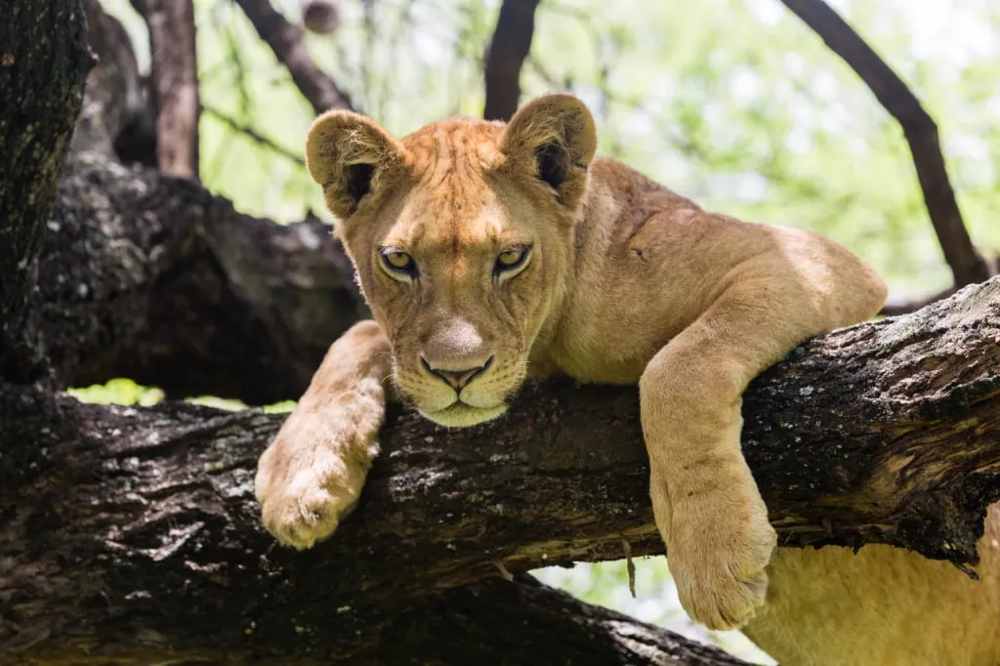
Which lion species counts as one of the Big Five?
Among the Big Five, lions are the most straightforward since there's only one species - Panthera leo. There used to be other lion species and subspecies, like the cave lions that lived in Europe, Siberia, and the Americas during the Ice Age. However, they all went extinct. Interestingly, this last remaining species, found in Africa south of the Sahara and a single forest in India, is also a cause for concern among scientists, primarily due to human activities.
Lions and humans
Throughout history, lions have paid a heavy price for attracting human attention. Hunting the "king of beasts" was always seen as a display of human power over nature and an emblem of aristocracy since such hunts were organized for the members of the upper class. The earliest record of humans hunting lions dates back to the 14th century BCE when an ancient Egyptian pharaoh engaged in such sport, eventually killing over a hundred lions.
Trophy hunting in the 19th and 20th centuries inflicted further damage to the already dwindling lion populations. Injured lions would retaliate by attacking people. In Africa, the Maasai tribe practiced ritualistic lion killings as a competition between men and as proof of maturity and warrior status, demonstrating their ability to track and defeat a lion. Only relatively recently has this tradition disappeared.
There have been numerous instances of lion attacks on humans. This often occurs when human activities force animals to leave their natural habitats and search for food, sometimes even preying on domesticated livestock. One of the most infamous cases of lion attacks on humans is the story of the Tsavo Man-Eaters, two lions that killed several dozen people during the construction of a railway in Kenya in 1898. This incident inspired the film "The Ghost and the Darkness."
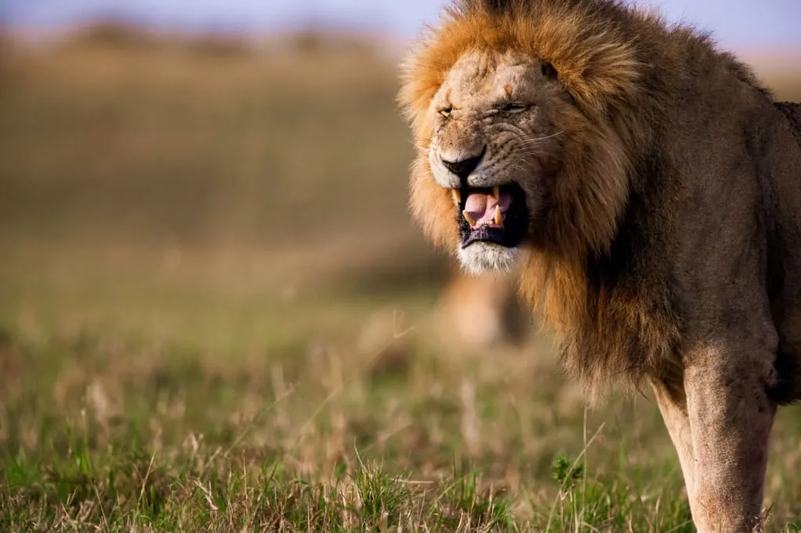
Today, lions in Africa continue to attack humans. There have been hundreds of such incidents documented in the past 30 years, and it appears that many others go unrecorded. Some sources suggest that in Tanzania alone, lions kill up to 100 people each year. Deaths from lion claws and fangs have also been reported in South Africa. Attacks mostly occur in rural areas, especially in villages near reserves, like the Selous in southern Tanzania, where people hunt animals. Nighttime attacks, particularly on moonless nights, are more common.
This rivalry is age-old. Lions “believe” that humans have multiplied excessively and taken their territory, while humans believe that lions behave brazenly by stealing their goats and cows. In the United States, there is a wave of outrage among animal rights activists when there are news of a lion being shot by a hunter in Africa. Meanwhile, people in rural African regions are interested in completely eradicating lions for many kilometers around. Unfortunately, this leads to dire consequences for the "king of the beasts."
How many lions are still there?
To the surprise of some, the status of lions is classified as Vulnerable. They face threats from hostile humans, who kill them for various reasons, as well as habitat loss and changes in their environment. Their population is continually decreasing, with an estimated 23,000 to 39,000 individuals remaining today. It's hard to believe, but there are more rhinos on the planet than lions, and for every lion, there are 14 elephants.
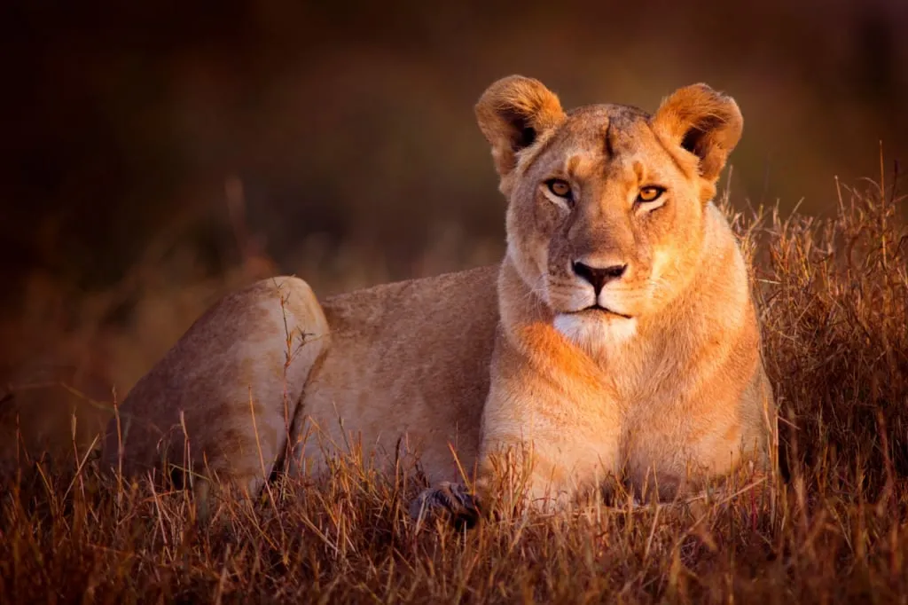
But once, lions were the most widespread animals on the planet, excluding humans. They roamed across four continents. However, they have lost 94% of their habitat. Since the release of the iconic animated film "The Lion King," according to the Wildlife Conservation Network, their population has halved.
Where to find lions in Tanzania?
You can encounter lions in national parks such as Lake Manyara, Tarangire, and in even larger numbers in Serengeti, Ruaha, Nyerere, and, of course, in the Ngorongoro Conservation Area.
African buffalo
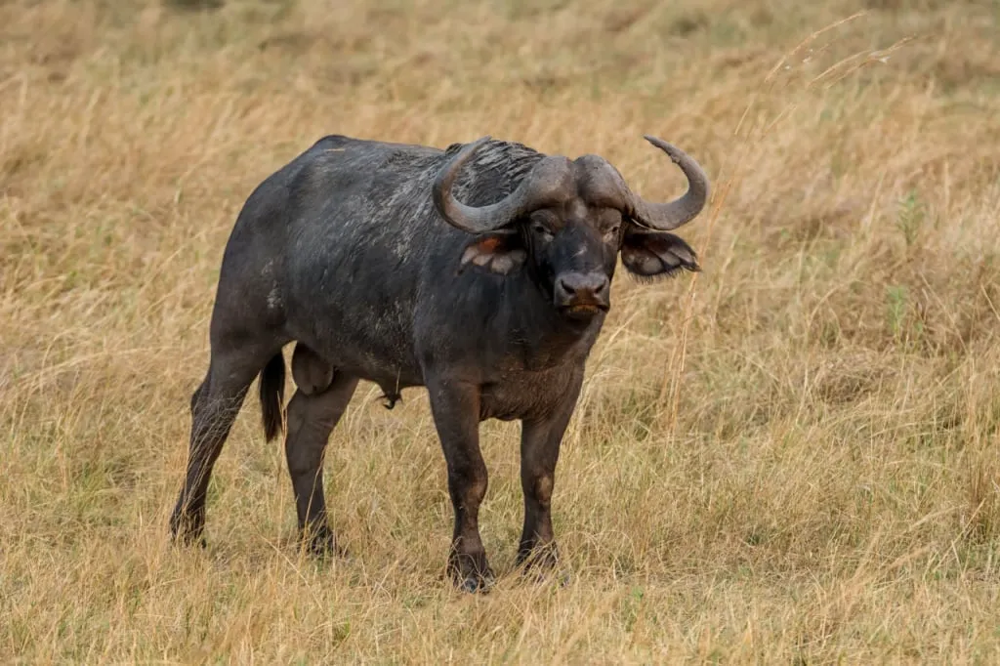
Buffaloes: who are they?
Buffaloes are a type of bovid, and there are over 10 different species of them. This group includes the so-called true buffalo and bison. In Africa, there is a single representative of the bovids which humans have never managed to domesticate. This explains why the African buffalo is part of the fearsome Big Five.
On the African plains, these animals gather in herds, often quite large, with up to 500 individuals. Occasionally, you can witness them forming super-herds, reaching several thousand in number. Such behavior helps them stay safe and protect their young from predator attacks.
In Africa, buffaloes don't have many natural enemies. Big cats prefer smaller prey, and even lions don't always dare to attack a buffalo - the risks are too high. If lions or hyena-like dogs target buffaloes, they usually go after stragglers from the herd. Nevertheless, buffaloes can defend themselves effectively, and their chances of fighting off attackers remain high. The weight difference between a lion and a buffalo plays a significant role - the latter is three times heavier than the "king of the jungle" Many cases have been recorded where buffaloes not only drove away attacking lions but also killed them.
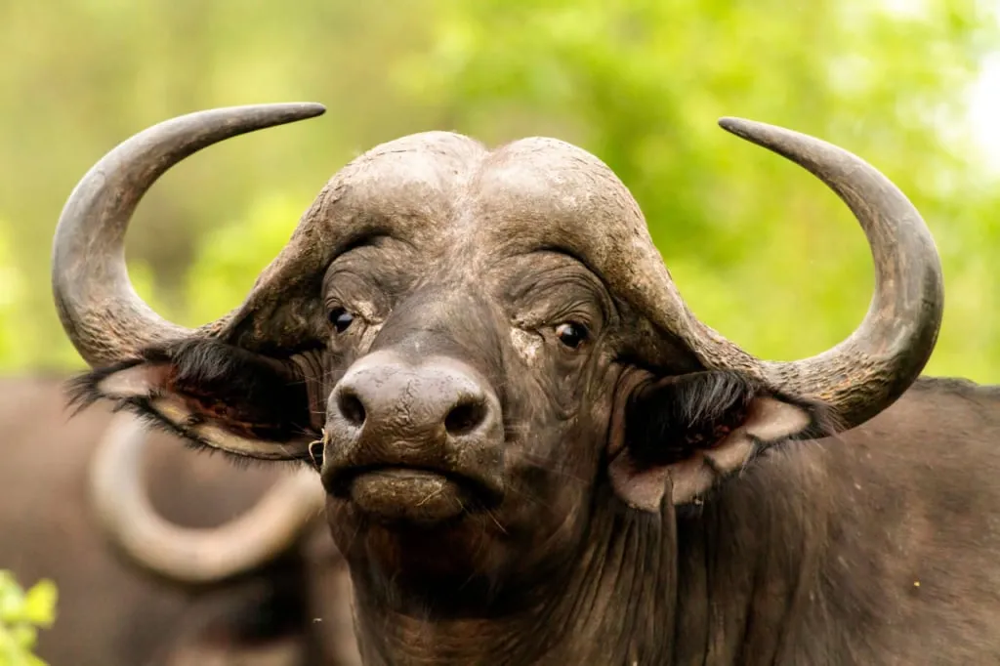
Buffaloes, especially the males, have very powerful horns, which they can use to seriously wound a predator. Moreover, these animals occasionally engage in territorial conflicts with hippos, crocodiles, white rhinos, and even elephants. In most cases, buffaloes end up losing, either severely injured or killed. Nevertheless, the fact that they demonstrate aggression towards such formidable adversaries speaks volumes about their character.
Which species of buffalo is included in the Big Five?
The African buffalo included in the Big Five is scientifically known as Syncerus caffer. In the past, it was also referred to as the Kaffir buffalo. However, the term "Kaffir" used to describe the indigenous peoples of South Africa is now considered an offensive racial slur. Therefore, "African buffalo" is a more appropriate term considering the lack of species competition on the continent. The African buffalo has several notable subspecies, for example, the Cape buffalo and the African forest buffalo.
Why are buffalos dangerous?
The "Black Death" is another name given to African buffaloes in the 19th century. They were also called "widow-makers." Some hunters considered buffaloes the most dangerous adversaries during hunting on foot. Today, when you are traveling through a national park in a secure and enclosed safari vehicle, the grazing bulls might seem tame and even skittish when they scatter away upon hearing the engine noise. However, during the safari-hunting era, an encounter with a buffalo often ended tragically for the hunter.
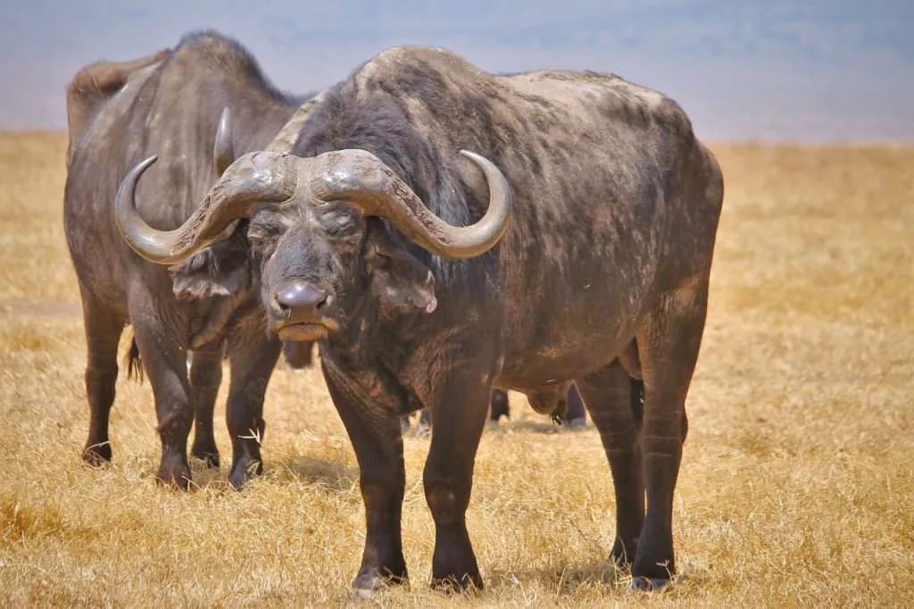
Buffaloes have an intriguing habit - when you approach them, even from a distance in a vehicle, they lift their heads and stare attentively in your direction, never breaking eye contact. And if you approach them on foot, armed, they may attack first. Trackers had to display all their agility and caution to track these dangerous animals and react in time before they launched an attack. Often, there wasn't enough time for a shot.
And another unique characteristic of the African buffalo's nature — if a healthy bull only attacks first in some cases, rest assured that a wounded bull will surely ferociously charge at you, madly bounding and trying to hit with its horns, to knock you down and trample you with powerful hoof beats.
Hunters have told tales of African buffaloes often showing not only aggression but also vengefulness. A wounded buffalo would retreat from its pursuer, circle around and lay an ambush for the hunter following its trail. There are also known instances of revenge by other bulls in the herd, one of whose members had previously fallen prey to a hunter.
Old solitary bulls are particularly dangerous, as they've left the herd due to their bad temperament and unsociability. They are usually larger than the average bulls, have massive sturdy horns, and are confident in their ability to stand their ground. Sometimes, they are the first to attack anyone intruding on the territory they consider their own. If you pay close attention during a safari, you'll notice that buffalo herds graze separately, without other herbivores nearby. Unlike antelopes and zebras, buffaloes drive away all other animals from their pastures.
Today, news occasionally report cases of buffalo attacks on humans. Alongside hippos, crocodiles, and elephants, buffaloes are considered some of the most dangerous animals responsible for human fatalities relatively frequently in rural areas of Africa.
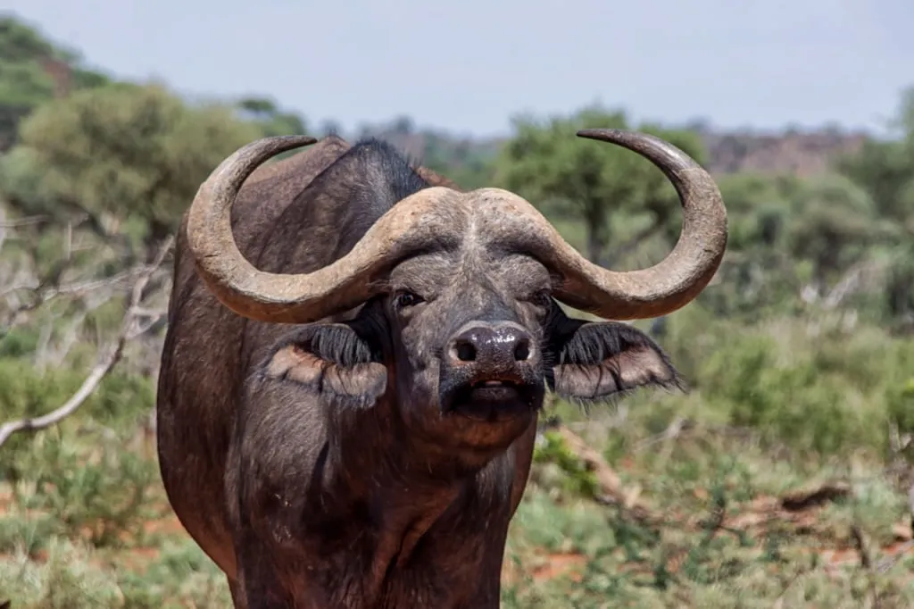
How many buffalos are left?
African buffalo is the only member of the Big Five that has not been designated as Endangered or Vulnerable. However, it is officially considered to be Near Threatened (NT).
Currently, there are about 400,000 buffaloes in Africa, and their population is declining. Their habitat is threatened by the reduction of open grazing lands. Apart from natural causes such as drought, the reduction of their habitat is also due to human activities—people are taking up more and more land for agriculture, displacing the animals from their usual environments.
Where to find buffaloes in Tanzania?
You can observe herds of African buffaloes in Arusha National Park, Lake Manyara, Tarangire, and the Ngorongoro Conservation Area. In the neighboring Serengeti, you'll find vast herds roaming the plains. Buffaloes can also be encountered in southern national parks such as Nyerere and Ruaha.
Rhino
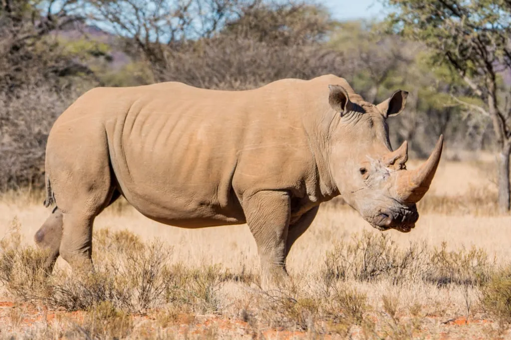
About rhinos
Following elephants, rhinos are the second largest terrestrial animals. The largest of them, white rhinos, weigh an average of 2,300 kilograms (5,070 pounds). Some males have been recorded to weigh up to 3,600 kilograms (7,937 pounds)! There are claims of even heavier rhinos, but those figures remain unverified.
The most distinctive feature of these animals is the keratin growths on their skulls, known as horns. African rhinos have two horns: a longer one on the nose and a smaller one on the forehead. Some rhinos may develop a third horn behind the second, and it will be the smallest.
These eye-catching horns pose a threat to the rhinos themselves. In Asia, particularly in Vietnam, there is a huge demand for rhino horns, ground into powder. Ignorant people believe that it can cure diseases and enhance their attractiveness to partners. The naive beliefs and willingness to pay any price encourage poaching, and unfortunately, its scale According to Save the Rhino International, the number of rhinos killed annually by poachers in Africa has increased from 60 in 2006 to 548 in 2022. The peak was between 2008–2015, when poaching grew rapidly (by more than 9000%): during five crisis years, from 2013 to 2017, over 1000 rhinos were killed each year. The most "black" year was 2015, when 1349 known rhinos were killed by people. Since 2020, there has been a slight increase again in the killings of these animals. Almost all of African poaching takes place in South Africa. On average, a rhino is killed in Africa every 20 hours. A single rhino horn can fetch several thousand or even hundreds of thousands of dollars for the final seller. This high demand even leads criminals to steal rhino horns from museums.
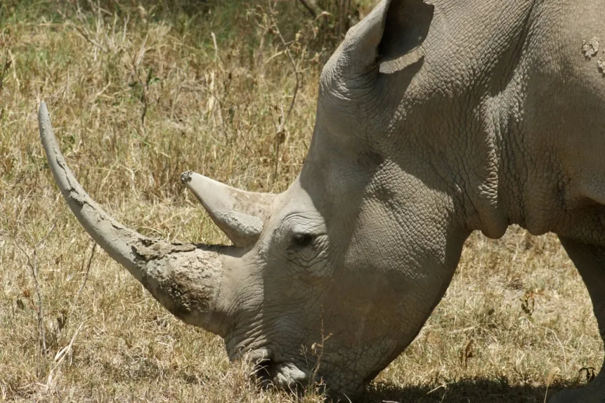
Rhinos are known for their excellent hearing and sense of smell, compensating for their very poor eyesight. However, besides humans, there are few natural threats to these animals. Only lions and crocodiles, as well as packs of hyenas and wild dogs, occasionally attack rhino calves or sick individuals.
On the other hand, rhinos are quite peaceful herbivores, only interested in the vegetation on their familiar grazing grounds and water nearby. If other animals intrude on their territory, the grazing rhino will drive them away. Sometimes, when protecting their calves, rhinos may show aggression and even attack a sneaking predator.
Another distinctive feature of rhinos, aside from their horns, is their thick skin. In some places, it can be as thick as 5 centimeters (2 inches) and serves as a natural armor. African tribes have used their skin to make shields.
Which rhino species is included in the Big Five?
There are five species of rhinos in total, of which two are found in Africa: the black rhino (Diceros bicornis) and the white rhino (Ceratotherium simum). It is worth mentioning that the common names for these two African species are arbitrary; there are no rhinos that appear white or black. All of them are a slate-gray color, with shades depending on the color of the soil in their habitat since rhinos enjoy wallowing in mud and dust.
We do not know for sure why some rhinos were called white and, in contrast, others black. The most common version suggests that when describing a rhino in South Africa based on its distinguishing feature, its broad upper lip, researchers used the Afrikaans word "wyd" (wijd, whyde, weit) meaning wide, broad, which was later interpreted as the English word "white". However, linguists have not found any evidence to support this theory.
These two species differ significantly, primarily in size. White rhinos are much larger and are, in fact, the largest members of the rhino family. They also have different skull structures and different upper lip shapes. White rhinos graze on open plains, while black rhinos often live in bushy thickets and even forests, so the former primarily eat grass, while the latter prefer twigs from shrubs. Lastly, black rhinos are more solitary, territorial, and aggressive.
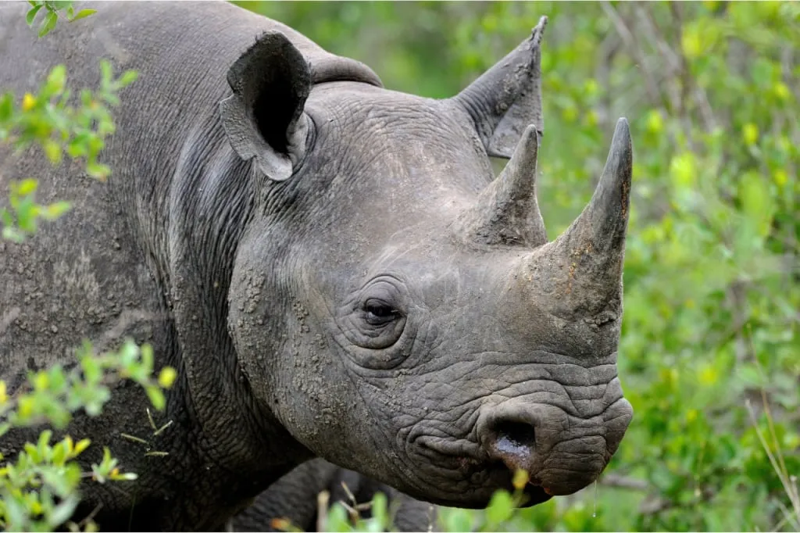
Different lists of the Big Five include either both African rhino species or only the black rhino.
Why are rhinos dangerous?
Rhinos are territorial animals. Once intruders encroach upon their grazing grounds, these ancient, massive creatures waste no time and charge rapidly towards the outsider. Their vision is not great, so at times, you can witness the hefty animal charging into rocks or trees.
Hunters have often taken advantage of this behavior, approaching rhinos closely and then quickly moving away at the last moment. The rhino doesn't immediately realize that the person is left behind and continues charging forward for some time. The hunter uses this opportunity to take a strategic position or even hide in cover, from where they shoot the confused animal. However, more often than not, rhinos are caught when they casually drink water at a watering hole.
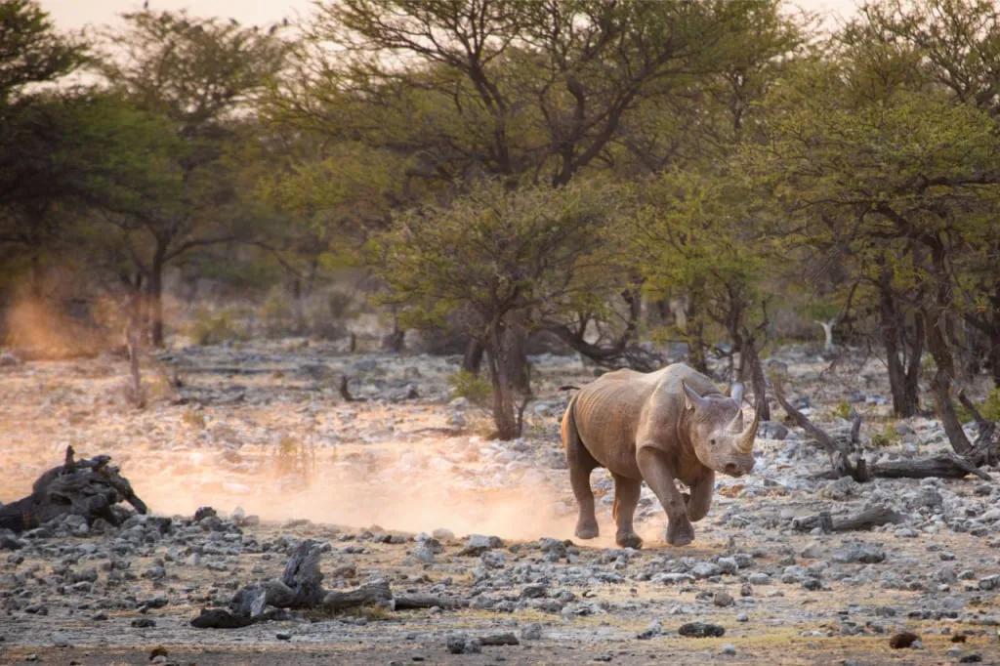
While male rhinos attack to defend their territory, female rhinos can become aggressive if their calves are nearby. A charging rhino weighing 3.5 tons (7,700 pounds) and reaching speeds of up to 48 km/h (30 mph) is a dangerous opponent in the African savanna. And the smaller black rhinos, still weighing just under 1.5 tons (3,300 pounds), can reach speeds of up to 64 km/h (40 mph). If you were a hunter on foot, encountering such an animal would surely have made it part of your Big Five African experience.
How many rhinos are left?
Once, there were over a million black rhinos grazing across sub-Saharan Africa. Today, their numbers have dwindled to just over 3,000. The official status of the species is Critically Endangered.
White rhinos fare slightly better, with about 10,000 individuals left on the entire continent, but their population is still decreasing.
The main threat to these animals is poachers killing rhinos for their horns.
Where to find rhinos in Tanzania?
The best place to observe rhinos in their natural habitat is the Ngorongoro Conservation Area. While their numbers here are not high, this ancient crater in northern Tanzania is one of the places where you have a good chance of seeing them peacefully grazing.
By the way, it was in Ngorongoro that the oldest wild rhino lived. The average lifespan of rhinos ranges from 35 to 50 years, but a female black rhino named Fausta lived in the crater for 57 years. Zoologists are still unsure of the exact reasons for her long life. The skeleton of the world's oldest rhino, who passed away in 2019, is now exhibited at the Olduvai Gorge Museum near the Ngorongoro crater.
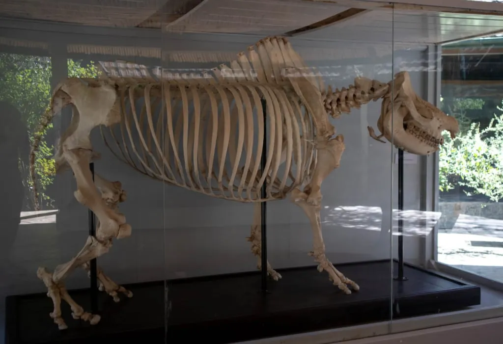
There are chances of spotting rhinos in Tanzania's most famous national park, the Serengeti, located in the northern part of the country. Rhinos also inhabit the largest national park in Tanzania, Nyerere National Park, located in the south.
There is a rhino conservation center in Mkomazi National Park, not far from Kilimanjaro. However, only a small population of rhinos lives in an enclosed and protected area there. That The number of black rhinos in the Rhino Sanctuary at Mkomazi in 2023 is 35 individuals. All adult animals were brought to Tanzania from South Africa, Czech Republic, and the United Kingdom. is being protected with the aim of future breeding and reintroduction into the wild. It's the only place in Tanzania where rhinos are not skittish, they know the rangers and their safari vehicles, so visitors can get up close to the animals and observe them from a distance of about five meters.
The Leopard
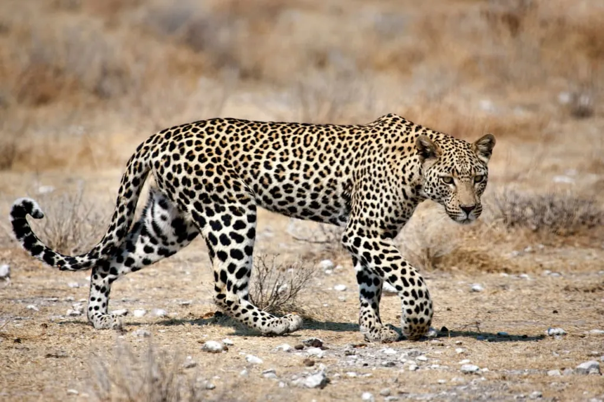
What are leopards like in the wild?
Leopards are elusive creatures, hunting under the cover of night and using the surrounding vegetation for camouflage. They prefer not to waste energy chasing prey for long. Instead, they use their intelligence to slowly and stealthily approach their target and then attack it with a powerful leap relying on their strong legs and claws.
Leopards are considered apex predators, and other predators do not specifically hunt them. However, their main threat comes from other leopards competing for territory. They can also fall prey to crocodiles and larger cats like lions. In such encounters, leopards almost always lose.
They also have to contend with hyenas, which compete for their kills and may target their cubs. To protect their food, leopards often hoist antelope and zebra carcasses high into trees, hanging them on branches out of the reach of competitors. They use their strong jaws and rely on powerful, clawed paws to quickly leap up the tree and move further along the branches, climbing as high as possible. In the Serengeti, you may come across a resting leopard, which will stay in the same place for a couple of days. If you look closely around, you may notice one or two hoofed animal carcasses on the same or neighboring tree.
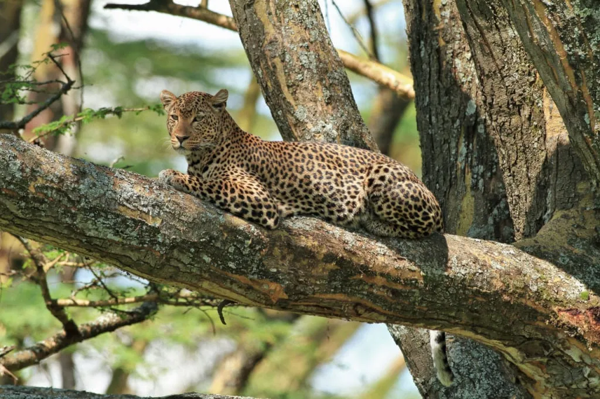
To avoid competition with lions, leopards may hunt smaller animals such as boars, birds, and rodents. With a weight ranging from 20 to 90 kilograms (44 to 198 pounds) depending on gender and age, they can feed on jackals, genets, various reptiles, small birds, fish, and even dung beetles. Leopards also prey on smaller cheetahs, servals, and caracals. In forests, they pose a threat to chimpanzees, and in open spaces, they can target other primates. They are even opportunistic enough to steal prey from their fellow leopards.
In Africa, people often mistake leopards for cheetahs due to similar-sounding names and similar coat patterns. But if you remember a simple rule to distinguish their coloration, you will never confuse one animal with the other when looking at their images. The coat pattern of cheetahs consists of solid black spots, while leopards have uneven rings known as "rosettes." There is also a similar-colored jaguar in nature, although it does not inhabit Africa (only South and partially North America). Jaguars also have rosettes, but they are filled with small spots.
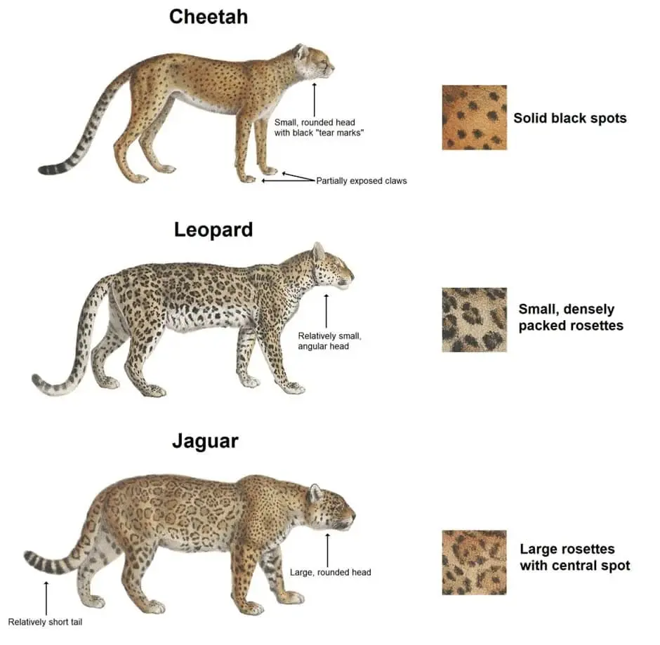
Occasionally, you can encounter a black panther in Africa. It is not a separate species but rather a variant of the leopard with a condition called melanism, where the fur appears black or nearly black, although if you look closely, you can see dark rings on the dark background.
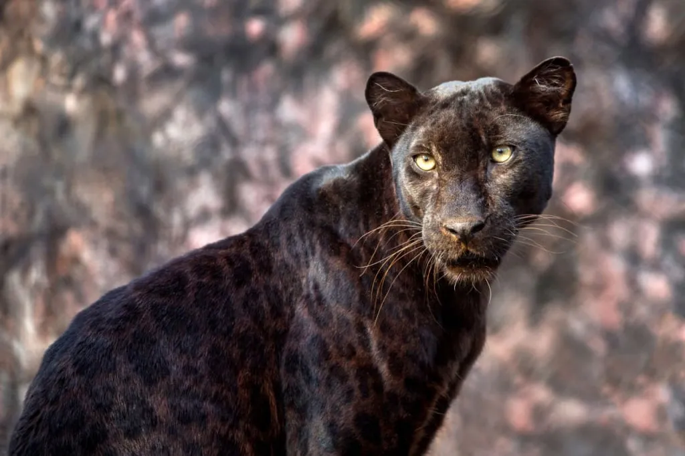
Which species is included in the Big Five animals?
There is only one species of leopard in the world - Panthera pardus. However, there are several subspecies, with the so-called African (Panthera pardus pardus) being the most common. It can be found throughout continental Africa, although its population is sparse to the north of the Sahara.
Another subspecies of the leopard is the Zanzibar leopard (Panthera pardus adersi). It is named after the Zanzibar Archipelago because it was observed on the main island of Unguja. This subspecies is considered extinct since the 1990s, although there are occasional reports from locals claiming to have seen it or found traces of its presence. The last reliable evidence of its existence appeared in the 1980s. The fact is that in the 20th century, due to the active human settlement on the island and conflicts with leopards over livestock, there was a campaign to exterminate them.
Why leopards are dangerous?
Leopards have always been considered dangerous and cunning animals thanks to their agility and intelligence. They are secretive, highly mobile, excellent climbers, and capable of making powerful leaps. They are even known to patiently stalk their prey, including humans. It is believed that if a leopard is wounded by a human, just like a buffalo, it will retaliate in a hundred out of a hundred cases.
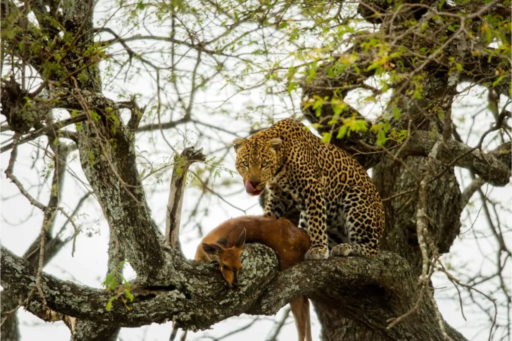
Most cases of leopard attacks on humans and human-eating incidents occur in India. The peak period was at the end of the 19th and the beginning of the 20th century. During that time, people actively settled, encroaching on the territory of animals, not only claiming their habitats but also competing for prey with predators, leading to direct conflicts. There were several known man-eating leopards that started consuming human corpses after mass epidemics, and then developed a taste for human flesh.
In some instances, leopards even entered human dwellings. Even today, such incidents are occasionally recorded in Africa. For instance, a few years ago, a leopard, drawn by domestic livestock, entered a dwelling in the Kilimanjaro region. Local residents killed it.
How many leopards are left?
Leopard as a species is classified as Vulnerable. The exact count is unknown as they are elusive by nature, but it is evident that their population is declining both worldwide and specifically in Africa.
Indirect evidence of the decline of leopards in Africa is the decreasing population of lions, as both big cat species are affected by similar factors. Factors such as habitat loss, fragmentation, and reduced prey availability, particularly medium to large-sized herbivores, which are the main prey for leopards, contribute to this decline. It is reported that the range of leopards in Africa south of the Sahara has decreased by 21% in the last 25 years. Additionally, the number of herbivores and large mammals in East Africa decreased by 52% from 1970 to 2005. From these estimates, it can be inferred that the leopard population has also declined by approximately half over the same period.
Where to find leopards in Tanzania?
Leopards are the most elusive animals of the Big Five in Africa. It takes both you and your safari guide putting in effort to spot them. Luckily, with the professional guides at Angelino Adventures, you can trust in their expertise. And if you want even better odds of seeing these majestic creatures, you can extend your stay in a protected area for a few extra days.
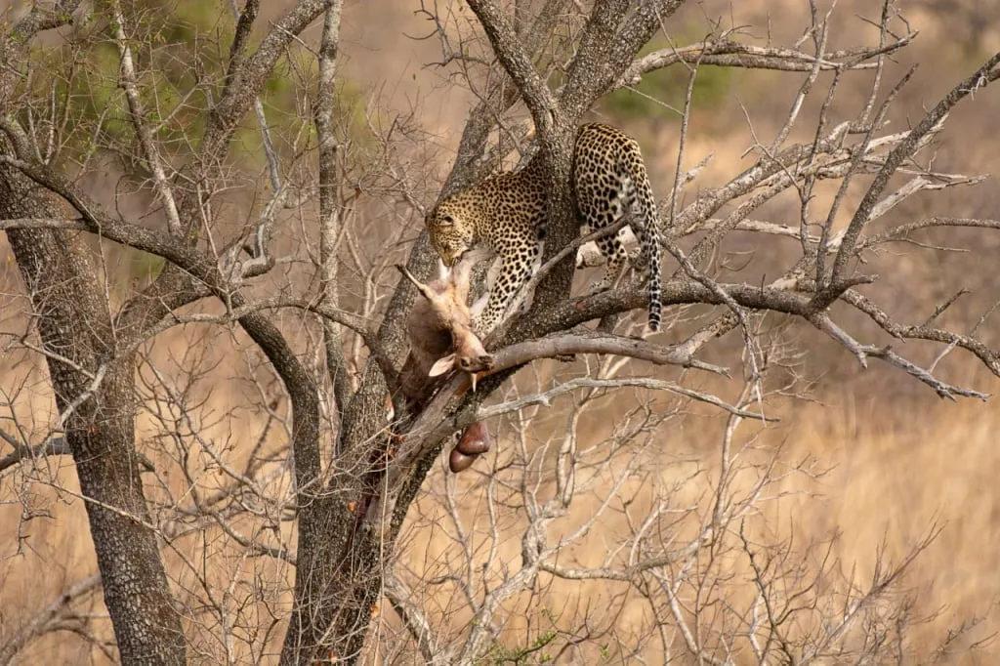
Leopards inhabit several national parks in Tanzania, including Lake Manyara, Tarangire, Serengeti, and the Ngorongoro Conservation Area, including the crater. In the southern national parks, leopards can be found in places like Ruaha and Nyerere
Where to find all of the Big Five in Tanzania?
Is it possible to find all five representatives of the Big Five African animals in one place? Yes, in Tanzania, there are protected areas where lions, elephants, rhinos, buffaloes, and leopards coexist. These areas include two national parks and a special protected territory:
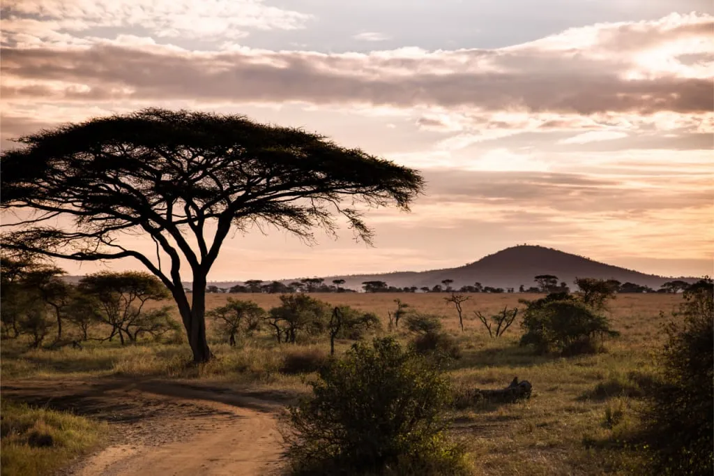
You can visit these and other fascinating protected areas of Tanzania by going on package safari programs offered by Angelino Adventures. The longer your safari trip, the higher the chances of encountering the Big Five.
Moreover, by booking a trip to Tanzania you'll have the opportunity to experience the wild nature of Africa and explore diverse landscapes and ecosystems. This includes the vast plains of East Africa, various types of forests, craters of long-extinct volcanoes in the Great Rift Valley, vast alkaline lakes, and even rural areas showcasing the ordinary life and local culture of the country.
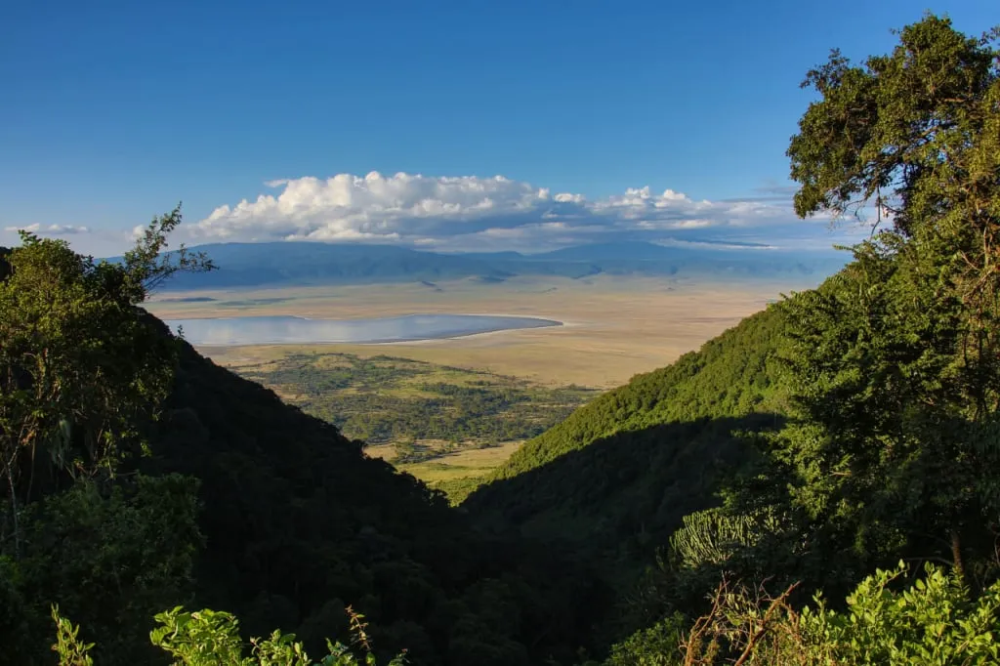
Good examples of such safari programs include:
- 5-day "Hartebeest" program in Tarangire, Ngorongoro, and Serenget
- 7-day "Eland" program with visits to Tarangire, Lake Manyara, Ngorongoro Crater, Serengeti, and the famous Lake Natron with the Ol Doinyo Lengai volcano.
Other “fives” of animals
Apart from the classic Big Five, there are other lists of animals to spot during a trip to Africa's wild nature. One such list is the Little Five animals of Africa, which consists of genuinely small, if not tiny, animals, each of which has some connection to a member of the Big Five.
The Little Five
The Lesser Five animals in Africa are:
- Elephant shrew
- Antlion
- Buffalo Weaver
- Rhino beetle
- Leopard tortoise
The elephant shrew
The elephant shrew, also known as the jumping shrew, are small mammals native to Africa belonging to the Macroscelididae family. They feed on insects and move on all four legs, but when threatened, they can leap with a bouncing motion on their hind legs. They grow to be about 10-30 centimeters (4-12 inches) long. Elephant shrews have elongated snouts with long trunks, which gave them their name. The term "shrew" is used due to their superficial similarity to these mammals, but genetically, they are actually even closer related to elephants than to true shrews. There are several species of these animals, some are called sengis, while others are referred to as elephant shrews or jumping shrews.
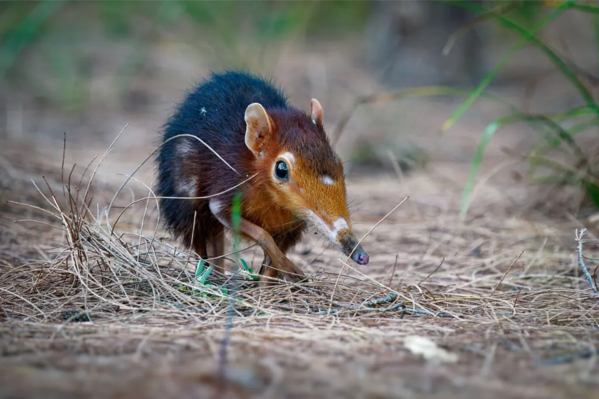
The antlion
As for the antlion, it is an insect that looks somewhat like a dragonfly. They are measured by the wingspan, which ranges from 2 to 15 centimeters (0.8-6 inches). These insects gained fame due to the behavior of their larvae, which are not ordinary predators hunting ants but instead builders of ingenious traps. These traps not only capture ants but also spiders and other arthropods.
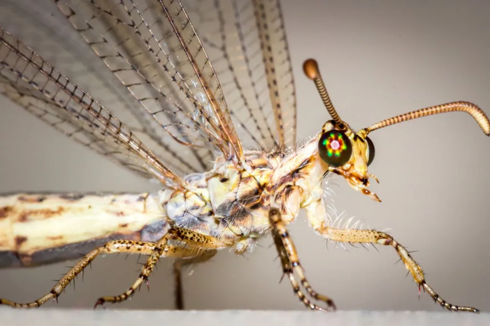
The antlion larva creates a trap in the sand, known as a pitfall trap, with a depth of up to 5 centimeters (2 inches), into which its prey falls. If the prey is not too light, it rolls down the inner side of the pit, ending up in the central depression where the antlion awaits, exposing its jaws on the surface. However, if the prey struggles in the sand, resisting the fall into the pit, the antlion uses its jaws to throw large sand particles at the victim, causing it to lose balance.
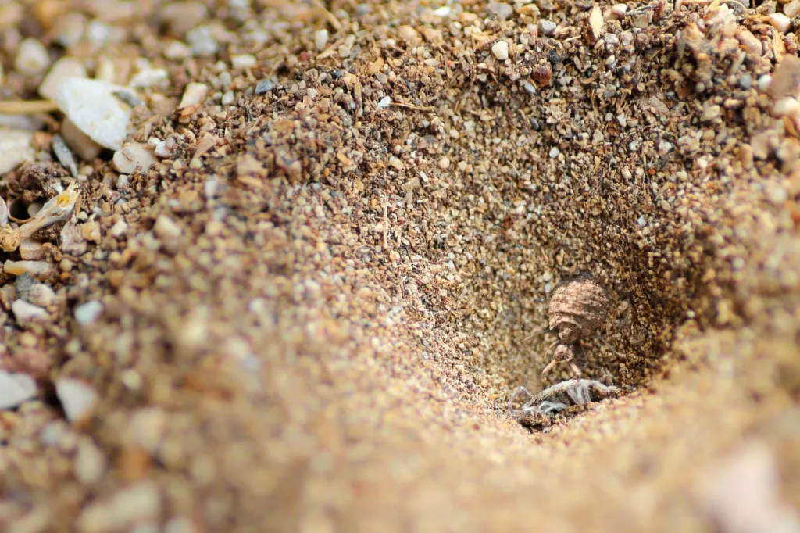
Once the prey is in the predator's jaws, it injects digestive enzymes and sucks out the dissolved content of its body, subsequently tossing the dry exoskeleton out of the pit. The behavior of the antlion and the idea of the pitfall trap were used to depict extraterrestrial predators in Wolfgang Petersen's film "Enemy Mine." Another iconic monster inspired by the antlion is the Sarlacc from "Star Wars."
Buffalo Weaver
The Black Buffalo Weaver is a relatively common avian species that inhabit Eastern and Southern Africa. These birds are often observed in proximity to buffalo herds, hence their name. They primarily derive their nutrition by removing insects and ticks from the skin of these large mammals. However, their dietary spectrum is wider than just insects. It extends to include beetles, caterpillars, flies, spiders, and even scorpions, as well as seeds and fruits. Interestingly, they are recognized as the only bird species known to experience something akin to an orgasm. One distinguishing attribute is that both male and female Black Buffalo Weavers possess a pseudophallus. While it does not contribute to reproduction, it is instrumental in establishing the pecking order within the colony, given the polygamous nature of both sexes in this species.
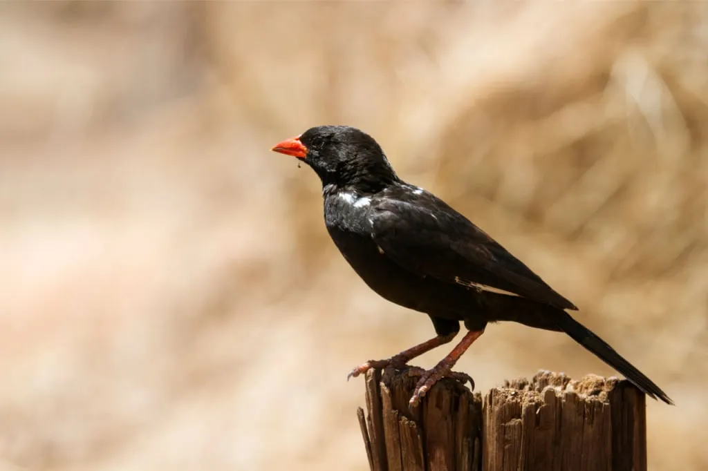
Rhinoceros Beetle
Rhinoceros beetles are a subfamily of beetles belonging to the scarab beetle family. Another name for them is "dung beetles." They are among the largest beetles in the world, with some individuals reaching a length of 17 centimeters (6 inches). There are numerous species, with nearly 250 in Africa alone. The majority of these species are characterized by having a long horn or even two. The famous scarab beetles constitute one of the genera of rhinoceros beetles.
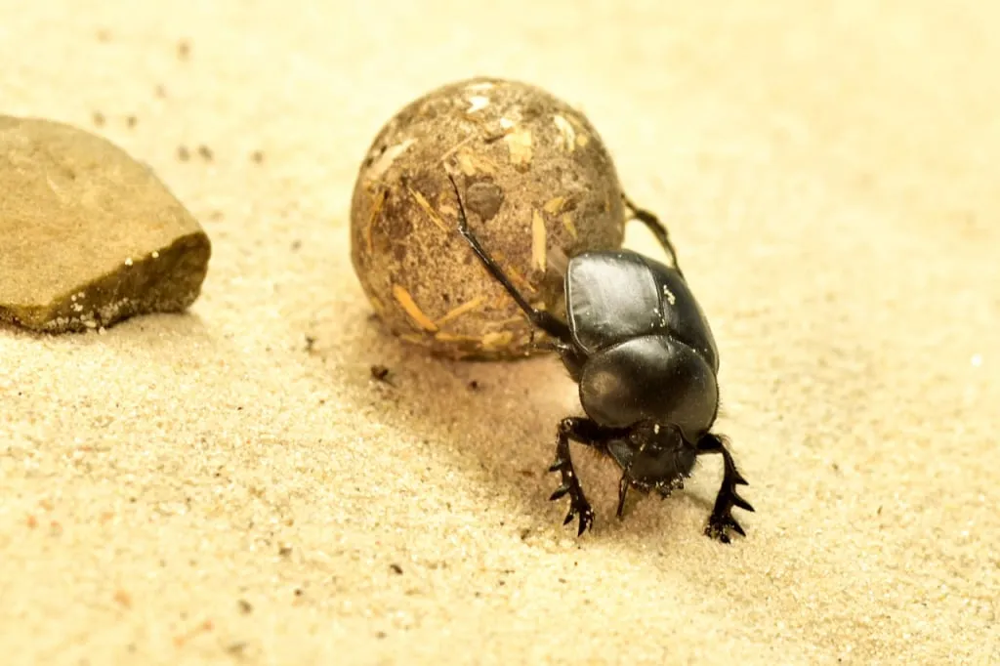
Leopard Tortoise
The Leopard Tortoise completes the Little Five of African animals that can be seen on safari. It earned its name due to the expressive coloration of its shell, resembling the spots of a leopard. These are widespread and relatively large animals. Some individuals can weigh about 50 kilograms (110 pounds) and reach a length of 70 centimeters (28 inches). Encountering them is not difficult, as there are approximately 6,000 leopard tortoises living in Tanzania, according to some estimates.
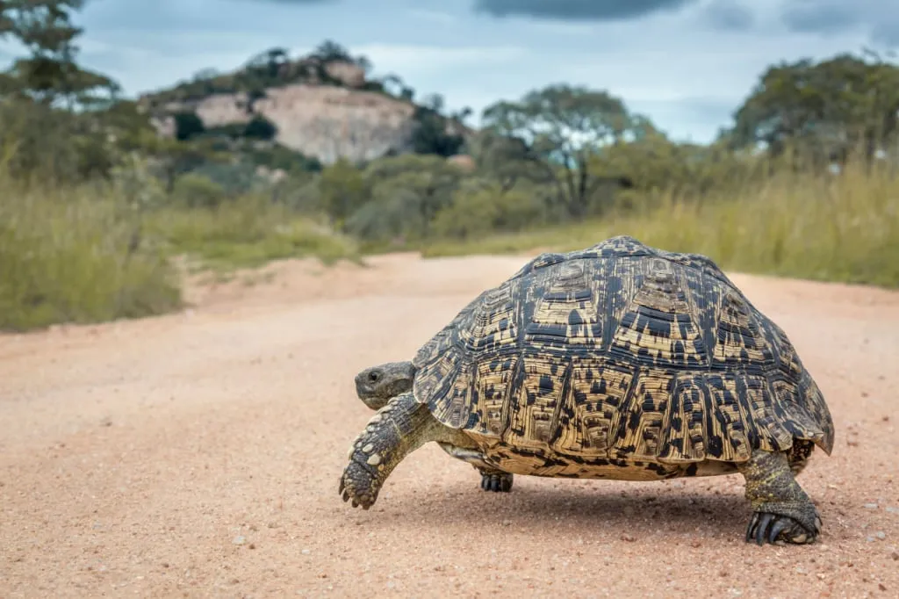
The Shy Five of Africa
For those who have already checked off the Big Five and the Little Five from their animal-watching bucket list, there's exciting news: it's time to level up. Human curiosity knows no bounds, and now it's time to embark on new adventures with the goal of spotting animals that are so elusive and timid that observing them in their natural habitat is quite the challenge.
Aardvark
One of the most fascinating members of the shy bunch is the aardvark, also known as the Earth Pig. It can dig a burrow in a matter of minutes and spend the entire day hiding inside. Only after an hour past sunset will it dare to venture out for its hunting expeditions. Aardvarks mainly feast on ants and termites, occasionally supplementing their diet with beetles, grasshoppers, and sometimes even mice. To penetrate ant and termite mounds, nature equipped them with a long, elongated snout akin to that of anteaters, armadillos, and pangolins. Due to their elusive nature, not much is known about the habits of aardvarks.
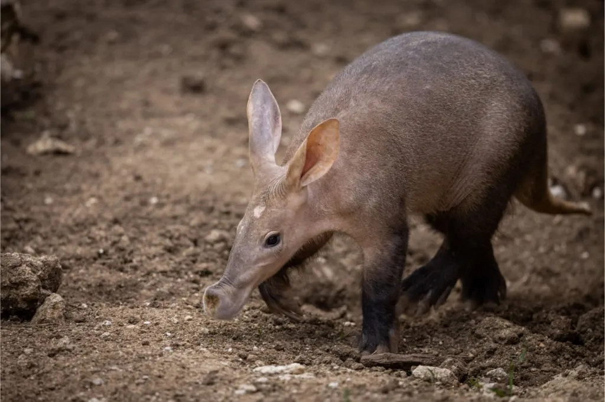
Aardwolf
Following the aardvarks on our list and often in reality, we have the aardwolves. They, too, dine on termites, so they revisit the termite mounds excavated by aardvarks. Unlike the aardvarks, aardwolves lack powerful paws and a muscular tail to demolish termite mounds. Consequently, they mostly eat whatever they can find on the ground. While they are reluctant to change their diet, they occasionally resort to eating spiders, other insects, their larvae, as well as small rodents, birds, and their eggs when their favorite delicacy is scarce. To avoid competition with aardvarks and bat-eared foxes for termites, aardwolves strive to specialize in species that are not of interest to the first two predators. Like other termite eaters, they also live in burrows and lead predominantly nocturnal lives.
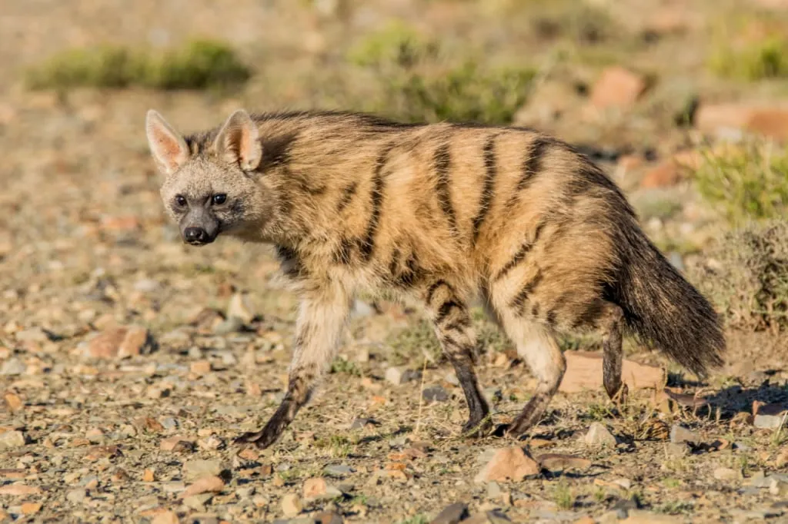
Bat-Eared Fox
Another member of the shy animal club in the African savanna is the bat-eared fox, and it also has a fondness for termites. Its enormous ears serve as perfect instruments to detect sounds coming from beneath the ground, locating the termite nests. Only one creature in the world exhibits ears larger in proportion to its body—the fennec fox. Bat-eared foxes resemble the previous animals on the list in that they dig burrows for shelter and consume insects besides termites, but they do so in only 1 out of 10 cases, with termites being their preferred choice. They specialize in termite species that aren't interesting to other predators, which keeps the competition with other ant-eating animals low. In East Africa, these foxes spend 85% of their time hunting at night. It appears that the nocturnal lifestyle of termites influences all three of these animals.
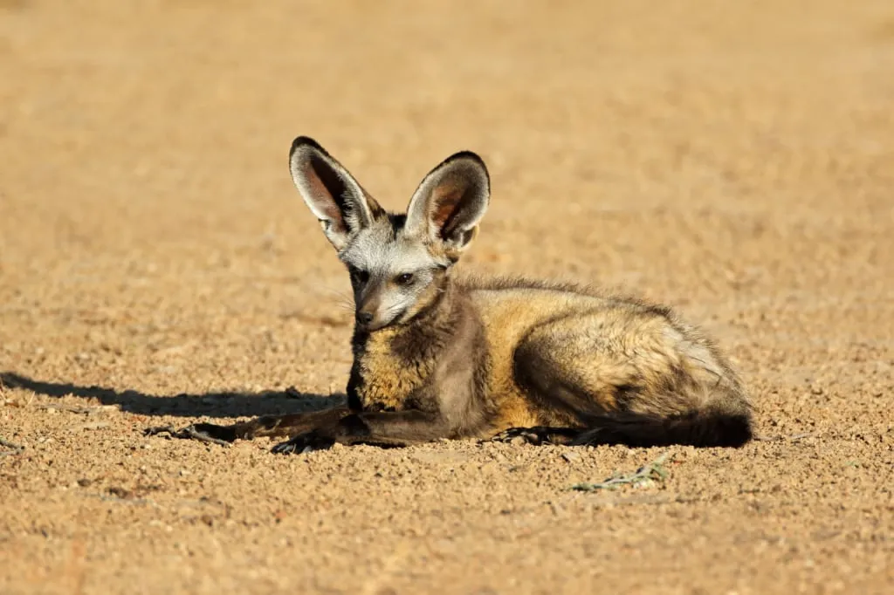
Porcupine
Next on the list of Africa's shy inhabitants that many dream of encountering is the crested porcupine. This large rodent, along with pangolins and armadillos, possesses a special protective covering made of keratin—quills in their case. It's easier to find their quills scattered on the road than to actually spot the porcupines themselves. The porcupine's quills are beautiful, adorned with alternating dark and light stripes. They can reach up to 20 centimeters (8 inches) long, and while many assume they are poisonous due to their sharpness and painful stings, they are not.
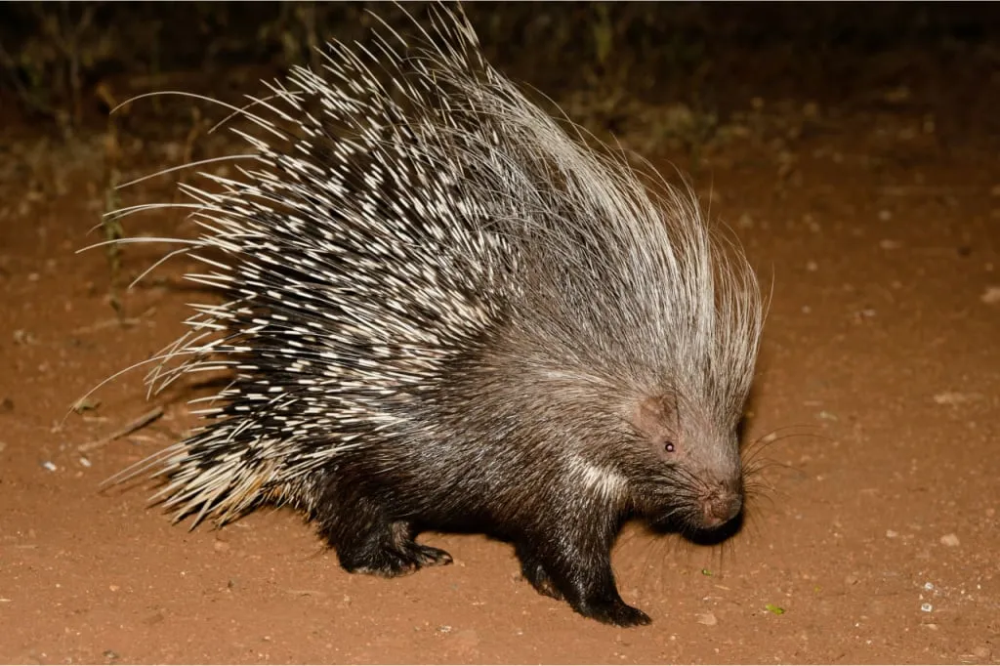
In East Africa, the so-called crested porcupines are commonly found. These elusive nocturnal creatures hide in burrows or dens built among rocks. Their tracks, which experienced trackers can follow, lead to their hiding places. Porcupines fear few animals. When confronted by predators, they aggressively shake their quills, stomp their hind legs threateningly, then turn around, spread their quills, and swiftly launch a backward attack, stabbing their pursuer with dozens of quills. Oh, it can be quite painful for leopards and lions! So, be cautious if you encounter them— porcupines have even been observed attacking vehicles!
The meerkat
If you've managed to spot the aardvark, aardwolf, bat-eared fox, and even the porcupine in East Africa at night, the last member of the Shy Five is even trickier. The meerkat, also known as the suricate, is a small mongoose that is found only in the southern regions of Africa. Heading to their habitat might not be a big problem, but locating and observing them is a challenge.
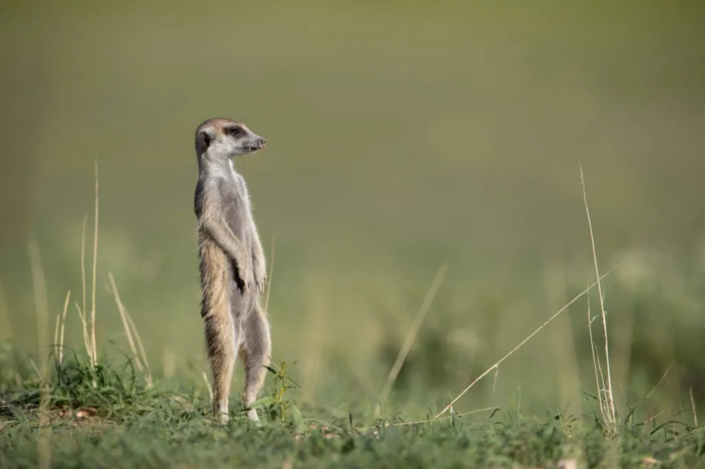
Meerkats are the only diurnal animals in the Shy Five, yet they are cautious and very vigilant. In their community, some members take on the role of sentinels. These creatures perch on elevated spots, keeping a watchful eye on their surroundings. As soon as a sentinel spots danger, all meerkats of the clan instantly retreat to their burrows. They have excellent eyesight, and the black patches around their eyes help reduce sunlight glare, keeping their vision sharp even in the blinding sun. A meerkat standing on a rock, gazing into the distance, is an iconic image reminiscent of the popular character Timon from "The Lion King" animated film.
The Impossible Five and the Ugly Five
For the most enthusiastic animal observers who have collected several different fives, South African photojournalist, traveler, and writer Justin Fox assembled "The Impossible Five." Passionate about the world of animals, he observed and photographed various species, eventually penning a book aptly named "The Impossible Five." His personal list includes incredibly elusive animals, and encountering any one of them would already be a unique event in your life.
"The Impossible Five" comprises:
- African Leopard, dwelling in the Cape Mountains in South Africa, known as the Cape Mountain Leopard.
- White Cape Lion, whose coloration is due to leucism—a genetic mutation causing a lack of pigmentation.
- Riverine rabbit - a rare species with a population of fewer than 500 individuals.
- Ground Pangolin, also known as the steppe lizard, another lover of termites and ants, also found in Tanzania.
- Aardvark, which we've already met in the Shy Five.
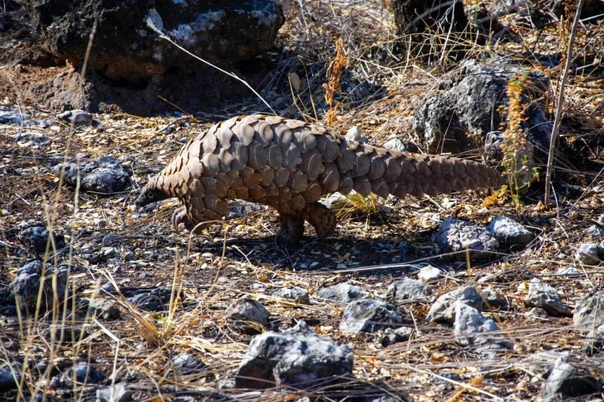
Often in descriptions of African animals, you can encounter another list of 'five' whose ethicality raises questions. We decided to include it in this article to arouse interest in the animals that make up this list. We are talking about the so-called Ugly Five animals.
In the English-speaking world, there's a concept of charismatic megafauna. It refers to large animals that attract the most attention from people, evoking sympathy and genuine interest. Documentaries, fictional and animated movies draw inspiration from these animals, books are written about them, and encounters with them elicit admiration. They also become a focal point for environmentalists to raise awareness about the wildlife's challenges, facilitating easier fundraising efforts. Examples include lions, elephants, kangaroos, pandas, penguins, whales, and killer whales, among others.
In contrast, people have gathered a list of animals that might appear unattractive at first glance. However, they are uniquely captivating and fascinating in their habits, lifestyle, and distinctive features. Perhaps, one day, we'll dedicate a separate article to them, but for now, let's simply list the members of the so-called Ugly Five:
- Wildebeest
- Warthog
- Hyena
- Marabou Stork
- Lappet-faced vulture
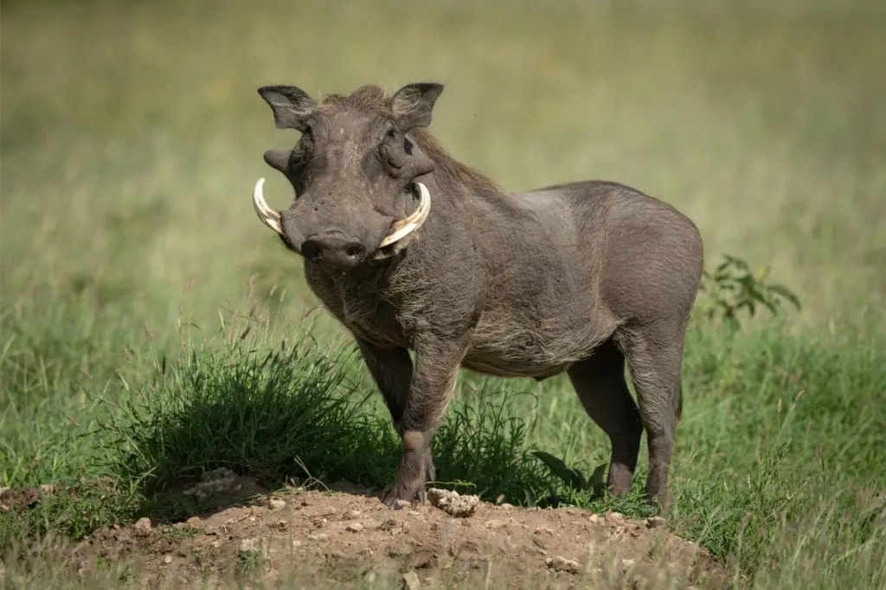
The Seven of Africa
If desired, you can always expand the Five to Seven. Two versions of the Big African Seven exist. The land version adds the spotted hyena and the cheetah to the African Five. The other version includes the southern right whale and the great white shark alongside the elephant, lion, buffalo, rhinoceros, and leopard. Both those ocean dwellers can be observed from the southern coast of Africa.
We hope you've enjoyed reading about the most famous African wildlife inhabitants. We wish you the opportunity to not only "collect" the listed Five and Seven animals but also encounter many other fascinating creatures in their natural habitats — on one of the most incredible continents on our planet, Africa.
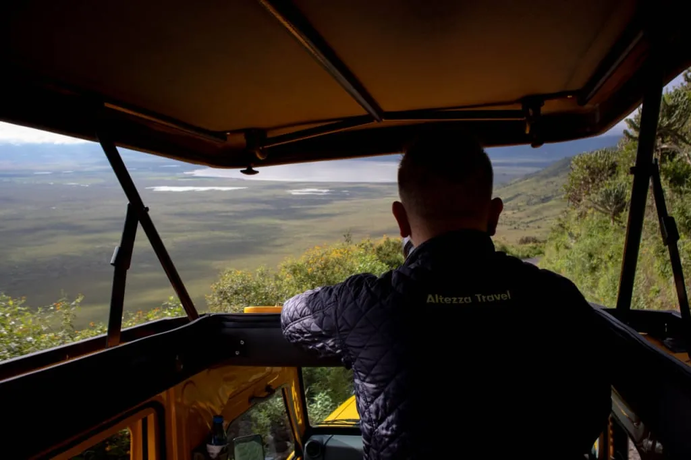
We extend an invitation to embark on a safari in Tanzania, located in East Africa! Here, you'll have the opportunity to witness hundreds of fascinating animals living in their natural habitat. Although the numbers of the rare species are slowly dwindling, they continue to inhabit our collective home known as Africa, for the time being.
All content on Angelino Adventures is created with expert insights and thorough research, in line with our Editorial Policy.


Want to know more about Tanzania adventures?
Get in touch with our team! We've explored all the top destinations across Tanzania. Our Kilimanjaro-based adventure consultants are ready to share tips and help you plan your unforgettable journey.
 Tanzania Safaris
Tanzania Safaris
 Kilimanjaro and other mountains
Kilimanjaro and other mountains
 About Angelino Adventures
About Angelino Adventures
 About Tanzania
About Tanzania